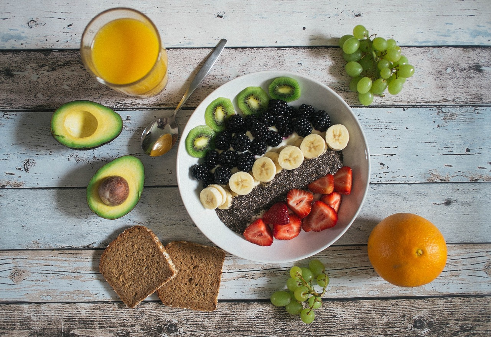

Beslenme İpuçları

Dengeli bir diyet, sağlıklı yaşamın temelidir. İşte bazı beslenme ipuçları:
- Çeşitli meyve ve sebzeler tüketin.
- Tam tahılları tercih edin.
- Protein kaynaklarını dengeli şekilde alın.
- Şeker ve işlenmiş gıdalardan kaçının.
- Yeterli su içmeyi unutmayın.
Egzersiz İpuçları
Egzersiz, fiziksel ve zihinsel sağlığınız için önemlidir. İşte bazı egzersiz ipuçları:
- Haftada en az 150 dakika orta şiddette egzersiz yapın.
- Ağırlık antrenmanlarını haftada en az iki kez uygulayın.
- Esneme hareketlerini ihmal etmeyin.
- Egzersiz yaparken eğlenmeyi unutmayın!
Günün Tavsiyesi
Sağlıklı bir yaşam için her gün en az 30 dakika yürüyüş yapmayı ihmal etmeyin!
Uyku İpuçları
İyi bir uyku, sağlıklı yaşamın vazgeçilmez bir parçasıdır. İşte uyku ipuçları:
- Her gün aynı saatte yatıp kalkmaya çalışın.
- Uyumadan önce ekran süresini azaltın.
- Rahat bir uyku ortamı oluşturun.
- Gevşeme tekniklerini deneyin.